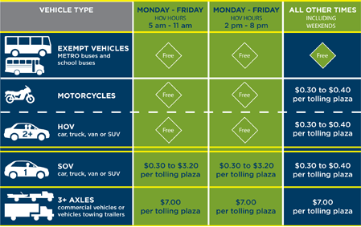

Depuis le 18 avril 2009, les voies gérées par Katy ont été ouvertes à l'usage des véhicules à occupation simple (SOV) en plus du trafic VMO traditionnel. Les covoitureurs et les motos roulent gratuitement pendant les heures de VMO. Pour tout le monde et à tout autre moment, les péages suivants s'appliquent à chaque place de péage.
Un EZ TAG traditionnel ou un compte EZ TAG Express, ou une autre étiquette de péage Texas interopérable est nécessaire pour payer les péages électroniques. Aucun argent liquide n'est accepté dans les voies gérées par Katy.
 Cliquez ici pour une version pdf plus grande (PDF, 229 KB) Cliquez ici pour une version pdf plus grande (PDF, 229 KB)

|